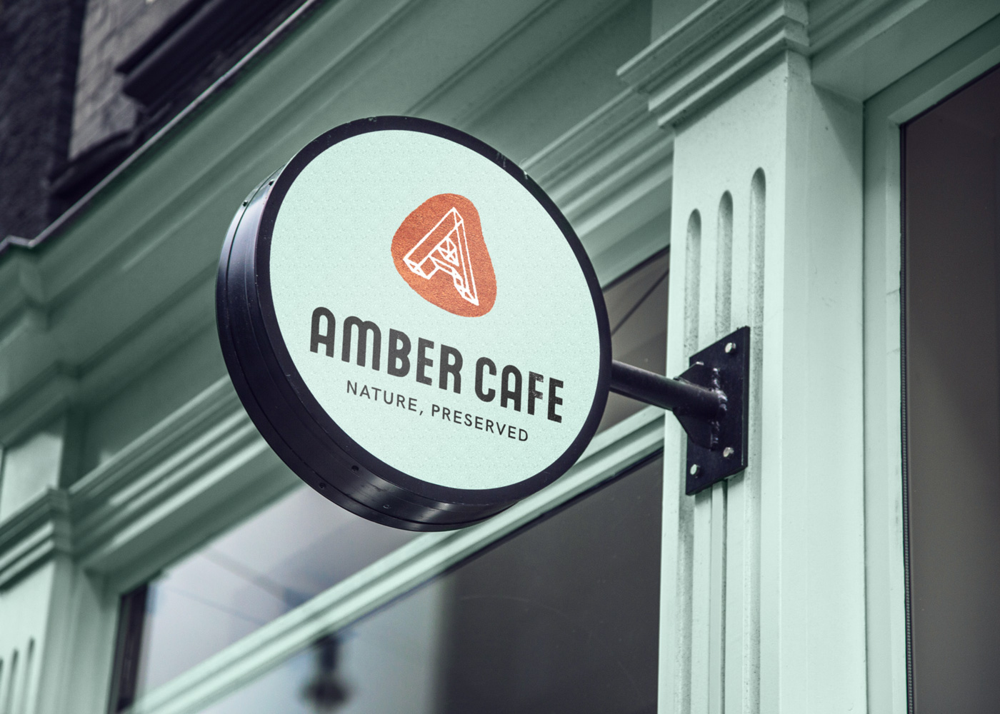
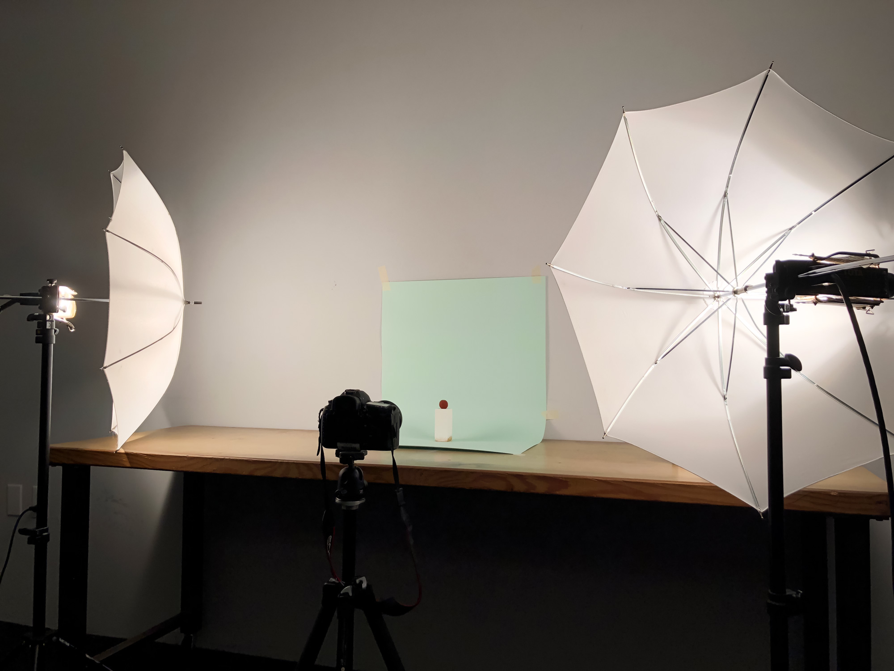
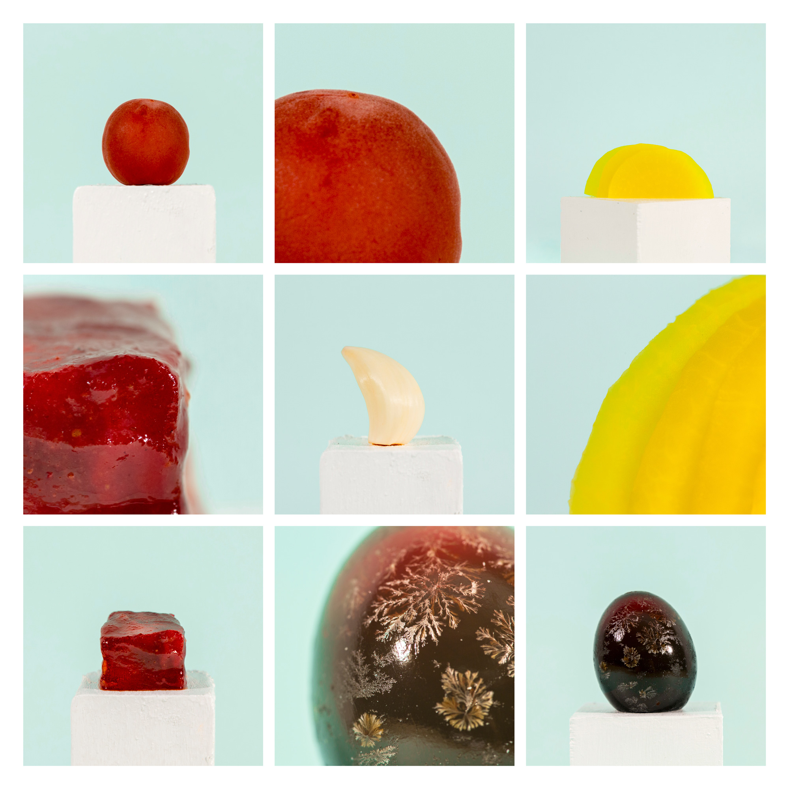
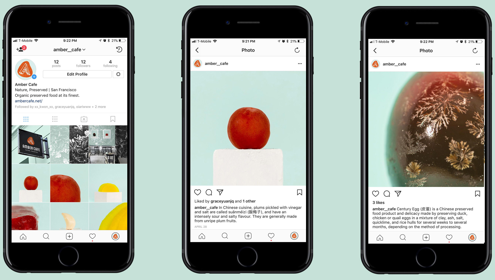
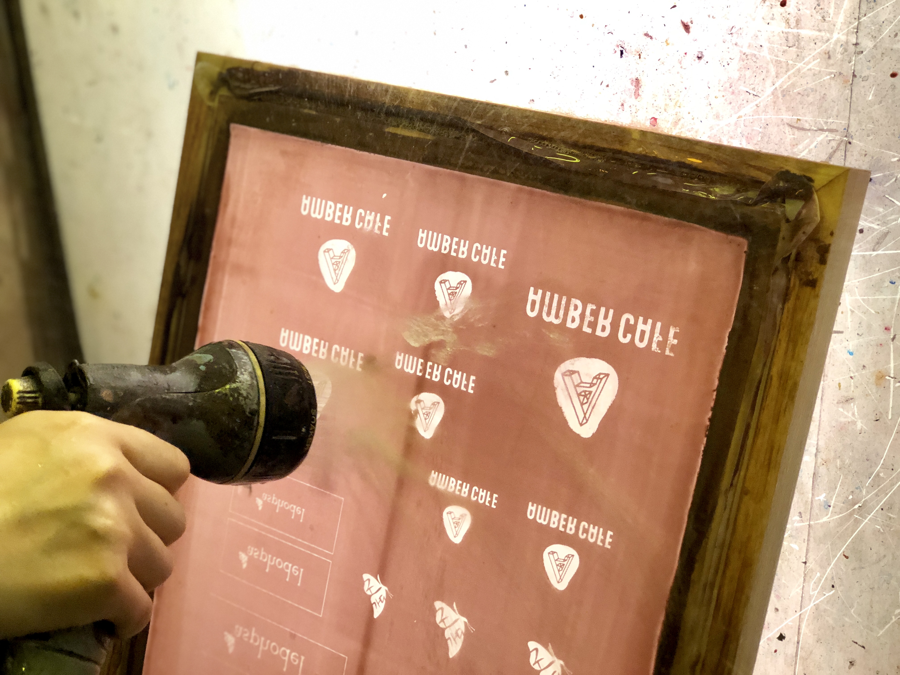

Copyright © Yifeng Lou. All rights reserved.

PROJECT: AMBER CAFE
Amber Cafe: Nature, Preserved
Identity | 2018 | College Project
Amber Cafe is a restaurant that serves traditionally preserved food without any use of artificial additives, which protects the environment. Traditionally preserved food is also good for human body and it reduces food waste.
In the logo, I am using amber, a kind of hard translucent fossilized resin that a lot of times contains insects, as a metaphor.
For the interior design of the restaurant, I scan and photograph preserved eggs and use the pattern for the wall covering to create a cohesive environment according to the food served in the restaurant.
I also incorporate photography into the identity system. In the photos, preserved food is treated as antiques or treasures since they require considerable time to make, and many of them have interesting shapes and textures. The name of the restaurant, Amber Cafe, also communicate the idea of treasuring preserved food.
  The taste chart can be seen through the water. I collected all the data and made them into charts, which show what average drinking water tastes like. The relation between PH and score shown in the chart also indicates how the taste improves when the PH is higher.
Copyright © Yifeng Lou. All rights reserved.